← Index · ← Previous · Next →
Authors: Priyash Barya, Daren Chen, Ashwith Prabhu, Laura Heller, Edmond Chow, Hansol Kim, Joshua Akin, Vasileios Niaouris, Jiefei Zhang, Alan M. Dibos, Pengjie Wang, Elizabeth A. Goldschmidt
Type: experiment · Category: quantum information and computing · PDF: https://arxiv.org/pdf/2605.11588v1
Analysis basis: full PDF text, analyzed in chunks
Topic relevance: 🔥 QC/QI experiment 4/5 · 🔥 quantum optics experiment 4/5
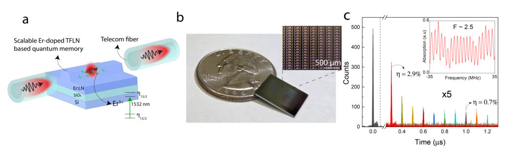
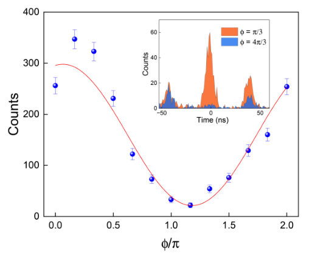
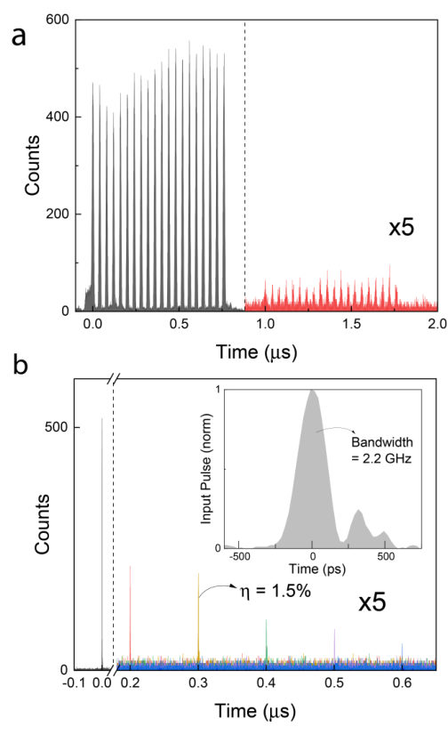
Summary. The study demonstrates a quantum memory in erbium-doped thin-film lithium niobate capable of storing telecom-band photons for over one microsecond. It achieves this by using the atomic frequency comb protocol to bypass the propagation loss limits of standard nanophotonics. The platform also shows high-bandwidth and multimode storage capabilities, making it a promising candidate for integrated quantum networks.
Why it may be interesting. This work is highly relevant to quantum optics and open quantum systems as it demonstrates long-lived coherent storage of telecom photons in a scalable, integrated nanophotonic architecture, providing a platform for studying light-matter interaction and quantum networking.
Main problem. The need for scalable, integrated quantum memory at telecom wavelengths that can overcome the short-duration storage limits imposed by propagation losses in nanophotonic devices.
Main result. Demonstrated telecom-band optical pulse storage for over 1 microsecond in an erbium-doped thin-film lithium niobate platform, with proven phase coherence and broadband/multimode capabilities.
Method. The researchers used the Atomic Frequency Comb (AFC) protocol in erbium-doped thin-film lithium niobate (TFLN) waveguides, employing spectral hole burning and measuring retrieval efficiency, coherence, and interference visibility.
Model / system. An experimental platform consisting of erbium-doped thin-film lithium niobate (Er:TFLN) nanophotonic ridge waveguides operated in a dilution refrigerator at 30 mK under a 1.5 T magnetic field.
Key observables. Storage time, retrieval efficiency, optical coherence time (T2), interference visibility, optical depth (OD), and noise figure.
Important parameters / regimes. Storage times up to 1.2 microseconds, optical coherence time of 90 microseconds, optical depth of 1.3, and a demonstrated bandwidth of 2.2 GHz.
Assumptions / limitations. The extraction of coherence time assumes a specific fitting model for photon echo intensity to account for spectral diffusion; efficiency is limited by low optical depth and comb finesse.
Figures summary. Figure 1 shows the device schematic; Figure 2 demonstrates coherent storage via interference fringes; Figure 3 shows multimode storage capability and broadband performance.
Paper structure. The paper introduces the problem of nanophotonic storage limits, describes the Er:TFLN platform and AFC protocol, presents experimental results for storage time and efficiency, demonstrates quantum coherence and multimode/broadband capabilities, and concludes with future scaling pathways.
Nanophotonic quantum memory is a vital component for scalable quantum information processing in quantum computing, networking, and sensing. Here we store single-photon-level telecom-band optical pulses for more than 1 microsecond using an atomic frequency comb in erbium-doped thin-film lithium niobate, far exceeding what is practically achievable by propagation in even the best nanophotonic devices because of propagation losses. We verify the quantum nature of this storage by demonstrating phase coherence and sub-single-photon noise upon retrieval. We also show the flexibility of our platform by storing up to 20 temporal modes and demonstrating an acceptance bandwidth up to 2.2 GHz. These results establish erbium-doped thin-film lithium niobate as a practical platform for on-chip quantum memory at telecom wavelengths, a key missing element for photonic quantum computing and quantum networking.
Authors: G. Diniz, I. M. Carvalho, M. Sanino, F. Iemini, V. V. França
Type: theory · Category: quantum gases · PDF: https://arxiv.org/pdf/2605.11146v1
Analysis basis: full PDF text, analyzed in chunks
Topic relevance: 🔥 entanglement & information structure 4/5 · analog quantum simulation 3/5
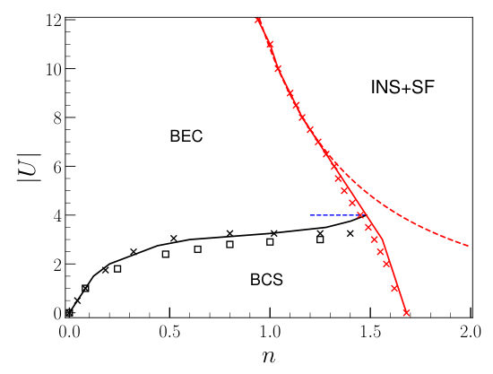
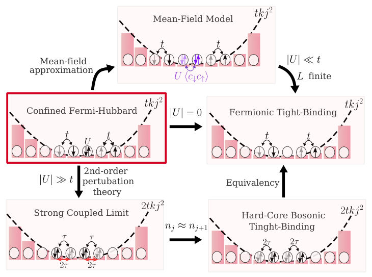
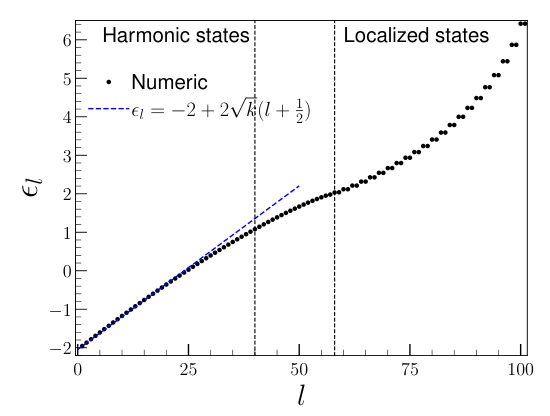
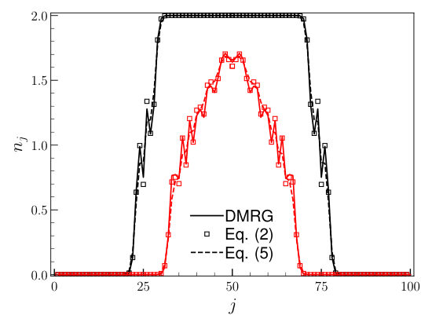
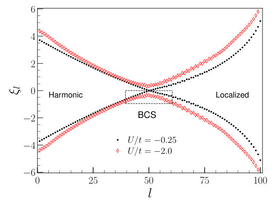
Summary. This paper investigates how harmonic confinement reshapes the BCS-BEC crossover in 1D Fermi-Hubbard chains. By using DMRG and effective models, the authors show that confinement creates a unique phase structure where insulating and superfluid regions coexist. They introduce new correlation-based tools to clearly identify the transition between weakly bound Cooper pairs and tightly bound molecules.
Why it may be interesting. It provides robust entanglement-based diagnostics to distinguish pairing regimes in inhomogeneous systems, which is highly relevant for interpreting experiments with ultracold atoms in optical lattices.
Main problem. Characterizing the BCS-BEC crossover and the superfluid-to-insulator transition in one-dimensional Fermi-Hubbard chains subject to harmonic confinement.
Main result. The study identifies distinct power-law scaling regimes for pair sizes in the BCS and BEC limits and demonstrates that confinement leads to a composite phase where insulating regions coexist with superfluid edges.
Method. The authors combine Density Matrix Renormalization Group (DMRG) simulations with effective-pairing theory, including mean-field analysis and second-order perturbation theory.
Model / system. A one-dimensional Fermi-Hubbard model with attractive on-site interactions (U < 0) subject to a quadratic/harmonic confining potential.
Key observables. Half-chain entanglement entropy, four-particle correlation functions, root-mean's distance of pair distribution, density profiles, and Bogoliubov quasiparticle spectra.
Important parameters / regimes. Interaction strength (U/t), confinement strength (k), particle density (n), and chain length (L).
Assumptions / limitations. The analysis assumes the validity of the effective-pairing theory in the strong-coupling limit and uses the local-density approximation as a point of comparison.
Figures summary. Figures include phase diagrams of the crossover, energy spectra of the confined model, density profiles comparing DMRG and effective models, and entanglement entropy plots identifying phase transitions.
Paper structure. The paper introduces the problem of confinement-induced symmetry breaking, presents numerical DMRG results, develops effective models for the BEC and BCS limits, analyzes entanglement and correlation-based diagnostics, and concludes with a unified phase diagram.
Confined ultracold atoms in optical lattices provide a versatile platform for simulating lattice models of strongly correlated quantum systems, where pairing phenomena and superfluid phases can be explored under controlled conditions. While the crossover between the Bardeen-Cooper-Schrieffer (BCS) phase and the Bose-Einstein condensation (BEC) is well understood in homogeneous systems, spatial confinement breaks translational symmetry and reshapes correlation patterns, making the BCS-BEC identification in trapped geometries challenging and allowing unconventional phases to emerge with no direct analog in homogeneous systems. Here we present a characterization of the BCS-BEC crossover in harmonically confined one-dimensional Fermi-Hubbard chains. Our analysis combines Density Matrix Renormalization Group (DMRG) simulations and entanglement-based diagnostics with effective models describing the formation of tightly bound fermion pairs. This combined approach enables a detailed understanding of how the interplay between interactions and confinement reshapes the crossover, leading to insulating regions coexisting with persistent superfluid correlations. Within this framework, we further introduce conditioned correlation functions whose power-law decay allows a clear distinction between BCS-like and BEC-like regimes. The consistency between the effective descriptions and the numerical DMRG results yields a unified picture of the crossover in harmonically confined geometries.
Authors: Yannick Deller, Alexander Schmutz, Raphael Schäfer, Alexander Flamm, Florian Schmitt, Ido Siovitz, Thomas Gasenzer, Panayotis G. Kevrekidis, Helmut Strobel, Markus K. Oberthaler
Type: both · Category: quantum gases · PDF: https://arxiv.org/pdf/2605.11861v1
Analysis basis: full PDF text, analyzed in chunks
Topic relevance: 🔥 analog quantum simulation 4/5 · non-equilibrium dynamics 3/5
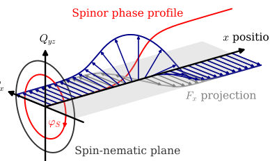
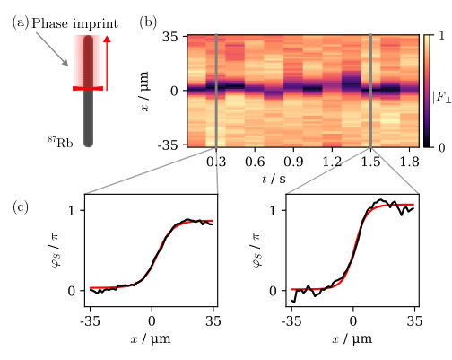
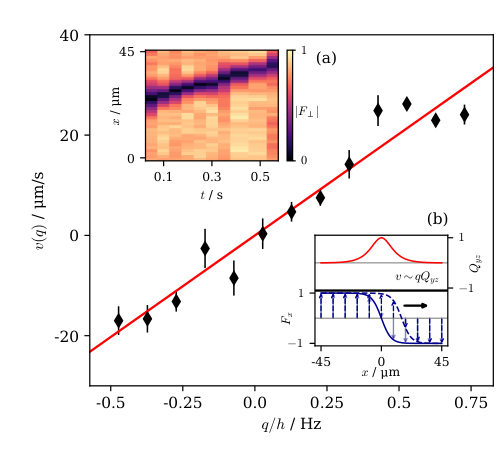
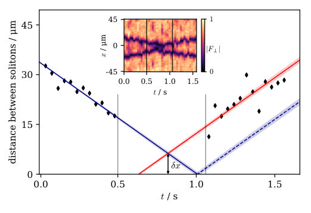
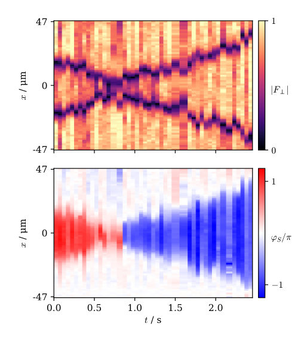
Summary. This paper demonstrates the experimental creation and manipulation of sine-Gordon-like solitons in a spin-1 Bose-Einstein condensate. By tuning the quadratic Zeeman shift, the researchers controlled soliton velocity and observed the elastic collisions characteristic of integrable models. The results provide a robust platform for studying nonlinear wave dynamics and effective field theories in ultracold gases.
Why it may be interesting. This work provides a highly controllable experimental platform to study integrable models and nonlinear dynamics, specifically demonstrating how many-body systems like spinor BECs can realize effective field theories like the sine-Gordon model.
Main problem. The study aims to experimentally generate and investigate the dynamics of sine-Gordon-like solitons in a spin-1 Bose-Einstein condensate, specifically focusing on controlling soliton velocity and observing elastic collisions.
Main result. The researchers successfully generated sG-like solitons, demonstrated that their velocity is tunable via the quadratic Zeeman shift, and observed elastic kink-antikink collisions with a phase shift that matches numerical simulations.
Method. Solitons are generated using a local phase-imprinting scheme with a steerable laser, while the quadratic Zeeman shift is controlled via microwave dressing. The dynamics are validated through 1D spin-1 Gross-Pitaevskii mean-field simulations.
Model / system. A quasi-1D spin-1 87Rb Bose-Einstein condensate in a box trap, described by a spin-1 Hamiltonian including kinetic energy, quadratic Zeeman shift, and spin-dependent interactions, which maps to an effective sine-Gordon field theory.
Key observables. Spinor phase (phi_S), transverse spin length (|F_perp|), spin components (F_x, F_y), and soliton velocity (v).
Important parameters / regimes. Quadratic Zeeman shift (q), spin healing length (xi_s approx 7 um), spin speed of sound (c_s approx 70 um/s), and ferromagnetic interaction regime (c_1 < 0).
Assumptions / limitations. The effective sine-Gordon theory assumes constant atom densities, an assumption that is violated during the actual collision process.
Figures summary. Fig 1: Visualization of the soliton as a phase-kink; Fig 2: Phase imprinting process and comparison of experimental vs analytical profiles; Fig 3: Linear dependence of soliton velocity on the quadratic Zeeman shift; Fig 4: Visualization of a kink-antikink collision; Fig 14: Plot of velocity vs quadratic Zeeman shift; Fig 15: Extraction of phase shift from simulations.
Paper structure. The paper introduces the experimental setup and imprinting technique, demonstrates the generation and stability of solitons, explores the control of velocity via the Zeeman shift, analyzes collision dynamics and phase shifts, and concludes with a theoretical comparison between the experimental results and the sine-Gordon model.
We experimentally generate sine-Gordon-like solitons in a spin-1 spinor Bose-Einstein condensate (BEC) utilizing a robust and reproducible local phase-imprinting scheme. We find that the soliton velocity can be tuned by the effective quadratic Zeeman shift. This enables the investigation of controlled soliton interactions, in which we observe the characteristic elastic collision behavior of the integrable sine-Gordon model. The spatial displacement -- the so-called phase shift -- between incoming and outgoing solitons, the signature of their pairwise interaction, is found to be in quantitative agreement with numerical spin-1 simulations within the error bars. These results establish spinor BECs as a highly controllable experimental platform for studying aspects of the dynamics of sine-Gordon-like models.
Authors: Dylan Harley, Matthias Christandl
Type: theory · Category: quantum information and computing · PDF: https://arxiv.org/pdf/2605.11285v1
Analysis basis: full PDF text, analyzed in chunks
Topic relevance: 🔥 analog quantum simulation 4/5 · entanglement & information structure 1/5 · exotic spin models in light-matter 1/5
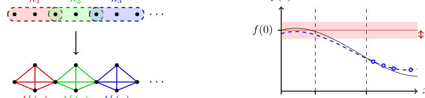
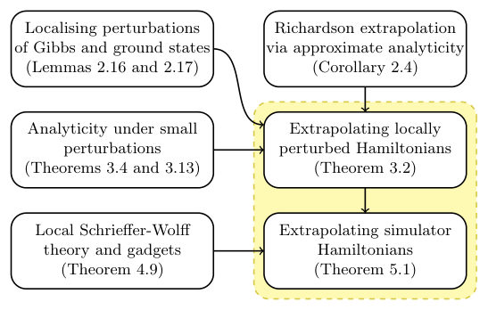
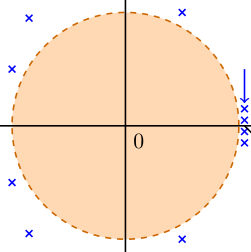
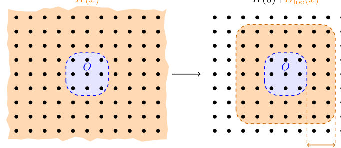
Summary. The paper shows that the massive interaction strengths typically required for perturbative gadget-based quantum simulation can be bypassed. By simulating at smaller energy scales and using classical Richardson extrapolation, one can achieve high precision with only polylogarithmic interaction strengths, provided the system is not near a phase transition.
Why it may be interesting. This provides a powerful theoretical framework for reducing the hardware requirements of analogue quantum simulators, making the simulation of complex many-body systems more physically achievable.
Main problem. The physical unfeasibility of using perturbative gadgets for quantum simulation due to the required interaction strengths scaling polynomially with system size and inverse precision.
Main result. Demonstrates that for non-critical systems, the required interaction strengths can be exponentially reduced to polylogarithmic scaling by using classical extrapolation of observables.
Method. The authors use Richardson extrapolation with Chebyshev nodes and a generalized local Schrieffer-Wolff transformation to extrapolate properties from a simulator Hamiltonian to the target Hamiltonian limit.
Model / system. General many-body Hamiltonians (k-local) simulated by simpler families (e.g., 2-local Heisenberg models) using perturbative gadgets with ancillary qubits and energy penalties.
Key observables. Local and extensive properties of thermal (Gibbs) states and ground states, including ground state energy and expectation values of local operators.
Important parameters / regimes. Perturbation parameter x (where x -> 0 is the target limit), inverse temperature beta, system size n, precision epsilon, and gadget degree d.
Assumptions / limitations. The system must be non-critical (away from phase transitions) and characterized by exponentially decaying correlations or a stable spectral gap.
Figures summary. Figure 1 illustrates the replacement of 3-local Hamiltonians with 2-local gadgets and compares the simulation vs. extrapolation approaches. Figure 2 provides a flowchart of the key results. Figure 5 presents a comparison table of required interaction strengths across different simulation tasks.
Paper structure. The paper first proves extrapolation results for analytic perturbations, then develops a local Schrieffer-Wolff theory for singular gadget Hamiltonians, and finally combines these to prove that gadget properties can be extrapolated to the perfect simulation limit.
Simple families of quantum Hamiltonians can simulate general many-body systems at arbitrary precision through the use of perturbative gadgets, however this generally requires interaction strengths spanning many orders of magnitude which scale polynomially in the system size and inverse precision, resulting in physically unrealisable systems. In this work, we show that for non-critical systems these required scalings can be exponentially reduced through classical post-processing, by simulating the model at smaller energy scales and extrapolating observables to the perturbative limit. In particular, we show that both local and extensive properties of thermal states with exponentially decaying correlations and ground states with a sufficiently stable gap can be simulated using gadgets whose interaction strengths scale only polylogarithmically in the inverse precision and the system size. As a key tool, we develop a generalised treatment of the local Schrieffer-Wolff transformation for geometrically quasi-local Hamiltonians over many energy scales, facilitating the analysis of perturbative gadget Hamiltonians without extensive global energy penalities, which may be of independent interest.
Authors: Johannes Alexander Jaeger, Elias Zapusek, Florentin Reiter
Type: theory · Category: quantum information and computing · PDF: https://arxiv.org/pdf/2605.11073v1
Analysis basis: full PDF text, analyzed in chunks
Topic relevance: 🔥 Tavis-Cummings & cavity-many-emitter 4/5 · Dicke superradiance 2/5
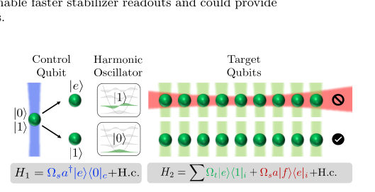
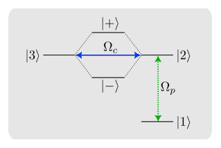
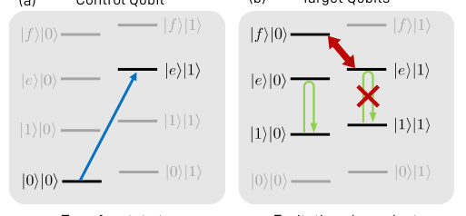
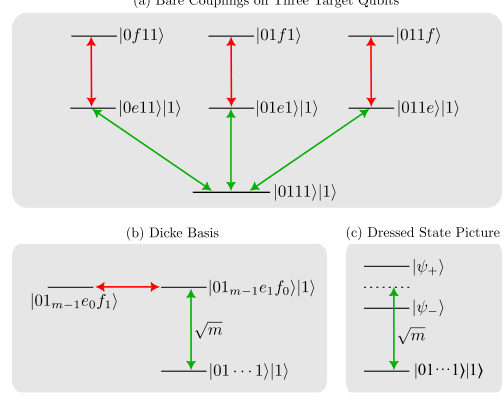
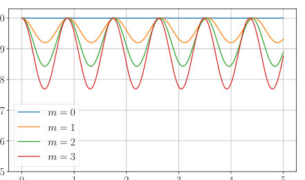
Summary. This paper proposes a new way to perform multi-qubit fanout gates in constant time using resonance engineering to block specific transitions. By optimizing the gate timing, the authors show that gate errors can be kept low even as the number of qubits increases up to 100. This could significantly speed up quantum algorithms like Grover's search and improve stabilizer measurements in error correction.
Why it may be interesting. It presents a scalable method for many-qubit operations using collective coupling and resonance engineering, which is highly relevant for researchers working on controlling multi-qubit dynamics and error mitigation in cavity QED and trapped ion systems.
Main problem. The implementation of an n-qubit fanout gate in constant depth while minimizing gate infidelity caused by off-resonant excitations and error accumulation.
Main result. The authors propose a resonance engineering scheme that achieves a phase-flip fanout gate with linear infidelity scaling in constant time, demonstrating that errors can be effectively cancelled using an optimal timing condition.
Method. The study uses analytical derivations of gate error bounds and numerical simulations in the Dicke basis, which reduces complexity from exponential to polynomial, allowing for simulations up to 100 qubits.
Model / system. A collection of n qubits coupled to a common harmonic oscillator via Jaynes-Cummings type interactions, applicable to platforms like trapped ions and superconducting circuits.
Key observables. Gate fidelity, infidelity (1-F), and error probability.
Important parameters / regimes. The ratio of drive strengths (Omega_t/Omega_c), gate duration (t), and the number of target qubits (n).
Assumptions / limitations. The scheme assumes the limit of weak probe drive relative to the strong blocking drive (Omega_t << Omega_c) and that the system can be described using a block-diagonal approximation in the Dicke basis.
Figures summary. Figure 1 shows the gate schematic; Figure 2 illustrates EIT-like energy level diagrams; Figure 3 depicts the gate mechanism steps; Figure 10 shows error probability vs. drive ratio; Figure 11 compares simulated fidelity to theoretical bounds.
Paper structure. The paper introduces the fanout gate problem, describes the physical mechanism using resonance engineering, provides theoretical error analysis and an optimal timing condition, presents large-scale numerical simulations using the Dicke basis, and discusses experimental feasibility and dissipation.
We present a novel implementation of an n-qubit fanout gate using resonance engineering. Our proposed mechanism uses Jaynes-Cummings interactions between multiple qubits and a common harmonic oscillator to realize a fanout gate at the system-level. Our theoretical analysis establishes upper bounds on the gate error, demonstrating linear infidelity scaling in constant time -- a favorable trade-off compared to a conventional CNOT decomposition. To validate the performance of our scheme at large system sizes, we exploit permutation symmetry to reduce the simulation complexity from exponential to polynomial in the number of qubits, enabling simulation up to 100 qubits. The results of this numerical analysis are consistent with our theoretical findings and allow us to characterize the performance well. Our gate will enable faster stabilizer readouts and could provide polynomial speedups in many quantum algorithms.
Authors: Joshua M. Courtney
Type: theory · Category: quantum information and computing · PDF: https://arxiv.org/pdf/2605.12450v1
Analysis basis: full PDF text, analyzed in chunks
Topic relevance: 🔥 methods for driven-dissipative 4/5 · quantum measurements 2/5
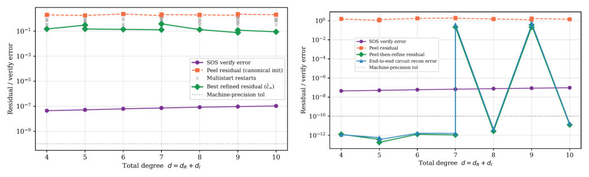
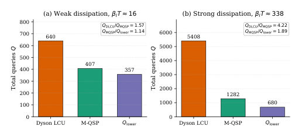
Summary. The paper presents a new quantum algorithm, Bivariate Quantum Signal Processing, for the optimal simulation of non-Hermitian Hamiltonians. It proves that the proposed method matches the fundamental limits of query complexity and provides a practical way to compute the necessary circuit parameters using a combination of recursive algebraic methods and gradient-based optimization.
Why it may be interesting. This is highly relevant for researchers in open quantum systems and quantum optics, as it provides an optimal algorithmic framework for simulating dissipative dynamics, gain/loss systems, and the no-jump trajectories of the Lindblad equation.
Main problem. Achieving query-optimal quantum simulations of non-Hermitian Hamiltonians while addressing the fundamental 'postselection barrier' and the complexity of finding rotation angles in multivariable QSP.
Main result. The paper introduces Bivariate Quantum Signal Processing (M-QSP) that achieves the information-theoretic lower bound for query complexity and establishes a tight two-layer bound on the postselection success probability.
Method. A bivariate extension of Quantum Signal Processing (M-QSP) using a sum-of-squares (SOS) spectral factorization and a two-stage optimization strategy (recursive angle-finding followed by FFT-based gradient refinement).
Model / system. A non-Hermitian Hamiltonian H_eff = H_R + iH_I, where H_R is Hermitian and H_I is positive semidefinite, representing non-unitary dynamics such as no-jump trajectories in Lindblad master equations.
Key observables. Postselection success probability, query complexity, and the operator norm of the propagator.
Important parameters / regimes. Operator norms alpha_R and beta_I, evolution time T, error tolerance epsilon, and the bidegree (d_R, d_I) of the bivariate polynomial.
Assumptions / limitations. The Hamiltonian components are accessed via a separate-oracle model with independent block-encodings; the algorithm assumes the existence of a bivariate polynomial approximation on the bitorus.
Paper structure. The paper first establishes fundamental lower bounds on query complexity and postselection probability, then introduces the Bivariate M-QSP algorithm, details the mathematical framework for SOS decomposition and angle-finding, and concludes with complexity analyses and optimization strategies.
We achieve query-optimal quantum simulations of non-Hermitian Hamiltonians $H_{\mathrm{eff}} = H_R + iH_I$, where $H_R$ is Hermitian and $H_I \succeq 0$, using a bivariate extension of quantum signal processing (QSP) with non-commuting signal operators. The algorithm encodes the interaction-picture Dyson series as a polynomial on the bitorus, implemented through a structured multivariable QSP (M-QSP) circuit. A constant-ratio condition guarantees scalar angle-finding for M-QSP circuits with arbitrary non-commuting signal operators. A degree-preserving sum-of-squares spectral factorization permits scalar complementary polynomials in two variables. Angles are deterministically calculated in a classical precomputation step, running in $\mathcal{O}(d_R \cdot d_I)$ classical operations. Operator norms $α_R\,,β_I$ contribute additively with query complexity $\mathcal{O}((α_R + β_I)T + \log(1/\varepsilon)/\log\log(1/\varepsilon))$ matching an information-theoretic lower bound in the separate-oracle model, where $H_R$ and $H_I$ are accessed through independent block encodings. The postselection success probability is $e^{-2β_I T}\|e^{-iH_{\mathrm{eff}}T}|ψ_0\rangle\|^2\cdot (1 - \mathcal{O}(\varepsilon))$, decomposing into a state-dependent factor $\|e^{-iH_{\mathrm{eff}}T}|ψ_0\rangle\|^2$ from the intrinsic barrier and an $e^{-2β_I T}$ overhead from polynomial block-encoding.
Authors: Jonas F. G. Santos, Shanhe Su, Moises Rojas
Type: theory · Category: quantum information and computing · PDF: https://arxiv.org/pdf/2605.11942v1
Analysis basis: full PDF text, analyzed in chunks
Topic relevance: 🔥 quantum measurements 4/5 · methods for driven-dissipative 2/5
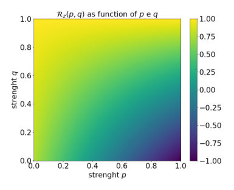
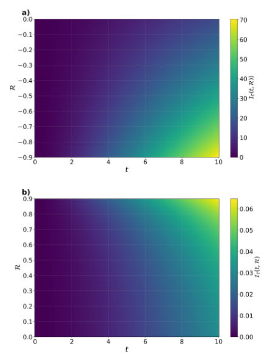
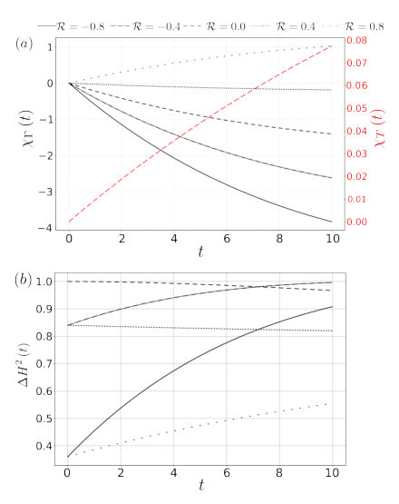
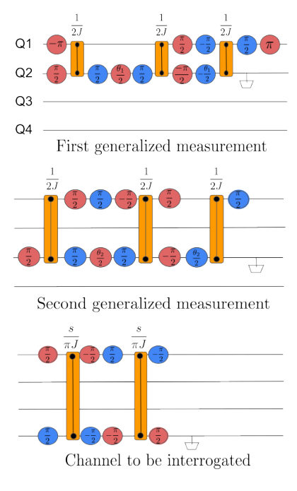
Summary. The paper presents a method to prepare optimized quantum probe states by tuning the strength of generalized measurements. This approach significantly improves the precision of estimating parameters like decay rate and temperature in noisy environments. It also establishes a new connection between quantum metrology and thermodynamic fluctuations in the transient regime.
Why it may be interesting. This work is highly relevant for open quantum systems and quantum sensing as it provides a practical framework for engineering states to maximize sensitivity to environmental noise and temperature using controllable measurements.
Main problem. Developing a versatile protocol for preparing optimal probe states via tunable generalized measurements to enhance parameter estimation precision in quantum sensing and thermometry.
Main result. The authors demonstrate that tuning measurement strengths allows for the design of probe states optimized for specific tasks, such as estimating decay rate or temperature, and derive a general analytical relation linking Quantum Fisher Information to thermodynamic susceptibilities and energy variance.
Method. The protocol uses a sequence of two non-selective, non-commutative generalized quantum measurements (POVMs) to transform an initial thermal state into a customized probe state.
Model / system. A single-qubit system (quantum probe) initially in a thermal state, evolving under a Generalized Amplitude Damping (GAD) channel, with a proposed implementation via a four-qubit NMR quantum circuit.
Key observables. Quantum Fisher Information (QFI), thermodynamic susceptibilities (kinetic and thermodynamic), and Hamiltonian variance.
Important parameters / regimes. Measurement strengths (p and q), decay rate (Gamma), temperature (T), and interrogation time (t).
Assumptions / limitations. The dynamics are described using the Lindblad master equation under the Born-Markov approximation.
Figures summary. Fig 1 shows the mapping of measurement strengths to probe states; Fig 2 displays QFI for decay rate and temperature as functions of time and preparation; Fig 3 compares susceptibilities and energy variance; Fig 4 details the proposed NMR pulse sequence.
Paper structure. The paper introduces a probe preparation protocol, applies it to the GAD channel to optimize sensitivity for decay and temperature estimation, derives a fundamental link between metrological precision and thermodynamic fluctuations, and concludes with an experimental implementation scheme.
We investigate a probe state preparation protocol based on two non-selective generalized quantum measurements to enhance parameter estimation in single-qubit systems. By fine-tuning the measurement strengths, we demonstrate the ability to design a broad class of probe states, initially prepared in a thermal state, which can be optimized for specific estimation tasks. We apply this framework to characterize the decay rate and the temperature of a generalized amplitude damping channel. Our results show that the preparation protocol significantly modulates the quantum Fisher information for both parameters. Furthermore, we derive a general analytical relationship between the quantum Fisher information, thermodynamic susceptibilities, and Hamiltonian variance, valid even in the transient regime. This connection highlights the role of energy fluctuations and kinetic response in determining metrological precision. Finally, we briefly discuss a quantum circuit for experimental implementation using nuclear magnetic resonance techniques.
Authors: Xudong Liao, Shuyi Pan, Zhenxing Zhang, Sainan Huai, Zhiwen Zong, Xiaopei Yang, Kunliang Bu, Wen Zheng, Xinsheng Tan, Yang Yu, Yuan Li, Yi-Cong Zheng, Tianqi Cai, Shengyu Zhang
Type: experiment · Category: quantum information and computing · PDF: https://arxiv.org/pdf/2605.11488v1
Analysis basis: full PDF text, analyzed in chunks
Topic relevance: 🔥 QC/QI experiment 4/5 · entanglement & information structure 1/5
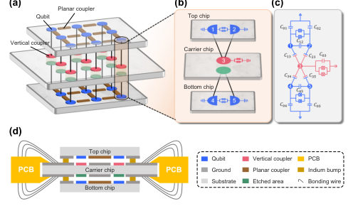
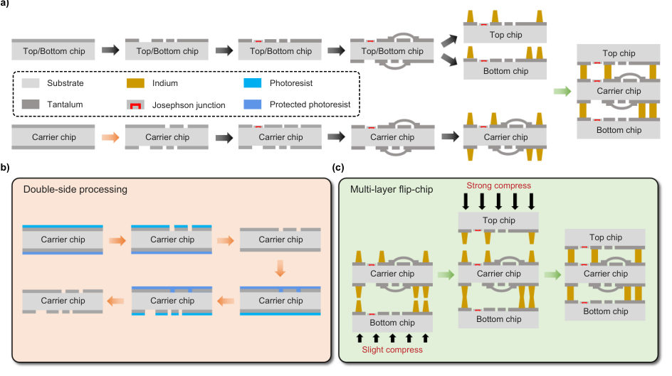
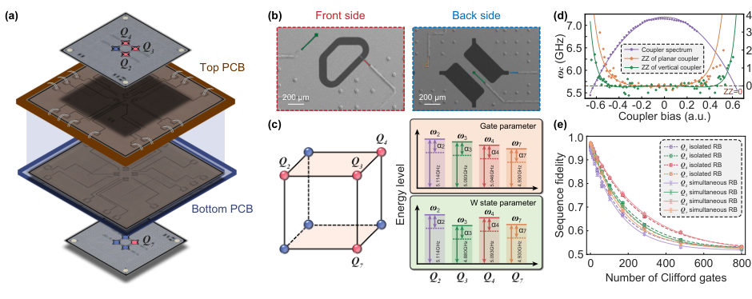
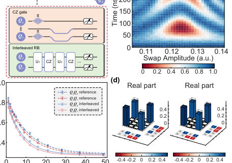
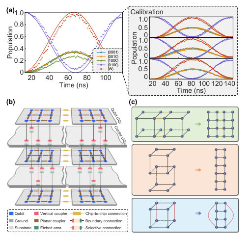
Summary. This paper presents a 3D integrated superconducting quantum processor that uses vertical tunable couplers to connect stacked qubit chips. The architecture achieves high-fidelity two-qubit gates and multi-qubit entanglement, providing a scalable pathway to overcome the physical limitations of planar quantum chips.
Why it may be interesting. This work demonstrates a hardware-level solution for high-density connectivity and crosstalk suppression, which is critical for implementing large-scale quantum error-correcting codes and complex many-body simulations.
Main problem. Monolithic planar architectures for superconducting quantum processors face scalability limits due to fabrication yields, complex routing, and increasing crosstalk as chip area grows.
Main result. The researchers demonstrated a 3D integrated processor with vertical tunable couplers that achieves CZ gate fidelities of 97.5% and high-fidelity Bell and W-state generation, comparable to planar coupling.
Method. The team used a multilayer flip-chip bonding process with indium bumps to stack two qubit chips on either side of a carrier chip, utilizing double-sided processing for the carrier chip and randomized benchmarking for characterization.
Model / system. A 3D integrated superconducting quantum processor consisting of two independent transmon qubit chips (top and bottom) vertically stacked on a single carrier chip, connected via indium bumps and featuring both planar and vertical tunable couplers.
Key observables. Single-qubit gate fidelities, CZ gate fidelities, ZZ crosstalk strength, Bell-state and W-state preparation fidelities, and qubit relaxation times (T1).
Important parameters / regimes. Single-qubit gate fidelity of 99.87%, CZ gate fidelity of 97.5%, interchip gap of approximately 8 micrometers, and T1 relaxation time of approximately 20 microseconds.
Figures summary. Fig 1 shows the 3D architecture, vertical coupling unit cell, and cross-sectional view; Fig 2 details the fabrication and bonding process; Fig 3 presents device layout, connectivity, and single-qubit RB results; Fig 4 illustrates CZ gate experiments and Bell-state tomography; Fig 5 shows the 4-qubit W-state evolution and the scalable 3D topological roadmap.
Paper structure. The paper introduces the scalability problem, describes the 3D integrated architecture and fabrication process, presents characterization of single-qubit and two-qubit gates, demonstrates multi-qubit entanglement, and concludes with a roadmap for scalable 3D integration.
Scaling superconducting quantum processors beyond the constraints of monolithic planar architectures is essential for fault-tolerant quantum computation. Here we demonstrate a three-dimensional (3D) integrated superconducting quantum processor in which two qubit chips are vertically stacked on opposing sides of a carrier chip and galvanically connected via multilayer flip-chip bonding. Intrachip qubit coupling is mediated by planar tunable couplers, whereas interchip coupling is enabled by vertical tunable couplers embedded in the carrier chip. Randomized benchmarking reveals simultaneous single-qubit gate fidelities of 99.87 % with negligible crosstalk, and controlled-Z gates achieve an average fidelity of 97.5 % for both intrachip and interchip operations. We further demonstrate high-fidelity Bell-state preparation and coherent generation of a four-qubit $W$ state, confirming the architecture's capability for interchip entanglement distribution. These results establish vertical coupling as a promising pathway toward scalable quantum processors compatible with advanced quantum error-correcting codes.
Authors: Sylvain Carrozza, Johann Chevrier, Luca Lionni
Type: theory · Category: quantum information and computing · PDF: https://arxiv.org/pdf/2605.12468v1
Analysis basis: full PDF text, analyzed in chunks
Topic relevance: 🔥 entanglement & information structure 4/5
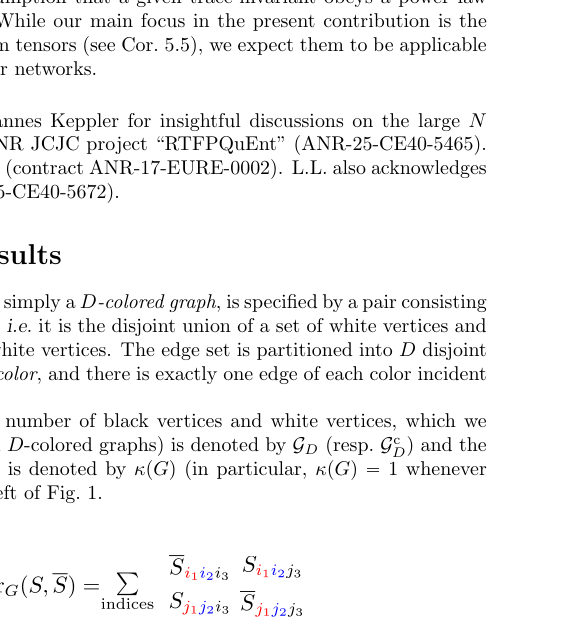
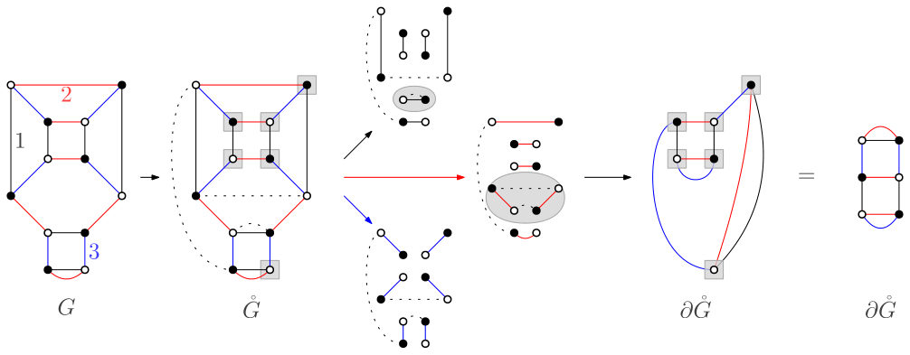
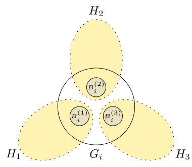
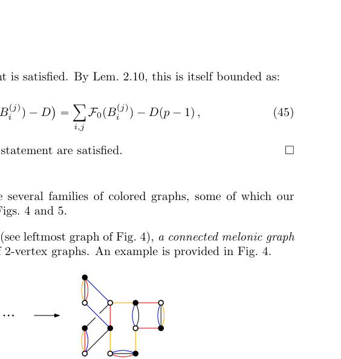
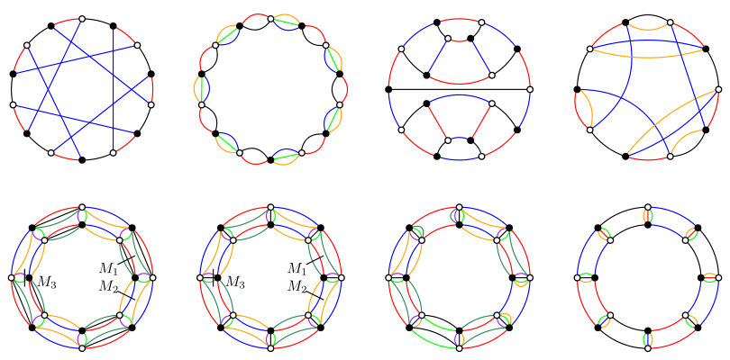
Summary. This paper investigates when the expectation values of tensor trace-invariants factorize in the large N limit. It identifies specific combinatorial conditions that ensure factorization and applies these results to compute the typical multipartite Rényi entanglement entropy for random quantum states.
Why it may be interesting. It provides fundamental tools for calculating entanglement properties in large-scale random quantum systems, which is crucial for understanding the entanglement structure of random quantum circuits and tensor networks.
Main problem. Investigating the conditions under which families of trace-invariants for complex random tensors exhibit large N factorization and determining the asymptotic behavior of multipartite entanglement measures.
Main result. The authors provide an explicit counterexample to factorization in the complex setting, establish new combinatorial bounds for factorization, and prove that compatible trace-invariants are dominated by tree-like structures at large N.
Method. Combinatorial and graph-theoretic analysis of D-colored graphs, using Wick's theorem, asymptotic expansion, and the study of tree-like dominant pairings.
Model / system. Complex Gaussian and Haar-distributed random tensors representing random D-partite quantum states in a C^N tensor product space.
Key observables. Trace-invariants, multipartite Rényi entanglement entropy, and moments/cumulants of random tensors.
Important parameters / regimes. Large N limit (asymptotic regime), number of partitions D, and the Gurau degree of the graphs.
Assumptions / limitations. The study assumes the large N limit and focuses on Local Unitary (LU) invariant distributions; some results assume a power-law lower bound for trace-invariants.
Figures summary. Figure 1 shows a 3-colored graph and its associated trace-invariant; Figure 2 illustrates a modified graph with added edges and boundary vertices; Figure 3 shows a graph where components are connected by a single point; Figure 4 shows the recursive construction of a melonic graph.
Paper structure. The paper first addresses the lack of factorization in complex tensors with a counterexample, then introduces theorems for sufficient conditions for factorization via combinatorial bounds and tree-like structures, and concludes by applying these findings to compute multipartite Rényi entanglement entropy.
It was recently proven that, in contrast to their matrix analogues, the moments of a real Gaussian tensor of size N do not in general factorize over their connected components in the asymptotic large N limit. While the original proof of this rather surprising result was not constructive, explicit examples of non-factorizing moments, which are expectation values of trace-invariants, have since then been discovered. We explore further aspects of this problem, with a focus on Haar-distributed (or Gaussian) complex random tensors, which are more directly relevant to quantum information. We start out by exhibiting an explicit example of non-factorizing trace-invariant, thereby filling a gap in the recent literature. We then turn to the opposite question: that of finding interesting families of trace-invariants that do in fact factorize at large N. We establish three main theorems in this regard. The first one provides a sufficient combinatorial bound ensuring large N factorization, that is also simple enough to be applicable to various cases of practical relevance. Our second main result shows that the expectation value of any compatible trace-invariant is dominated by certain tree-like combinatorial structures at large N, which we refer to as tree-like dominant pairings. Our third main theorem establishes that any trace-invariant admitting tree-like dominant pairings does actually factorize at large N. In this way, we are able to prove that various families of trace-invariants that have been previously studied in the literature do factorize at large N. We apply our findings to the theory of multipartite quantum entanglement: to any trace-invariant is associated a multipartite generalization of Rényi entanglement entropy, whose typical expectation value in the uniform random quantum state can be explicitly computed assuming large N factorization.
Authors: Katrin Hecker, Samuel Möller, Tobias Deußen, Hubert Dulisch, Luca Banszerus, Kenji Watanabe, Takashi Taniguchi, Christian Volk, Christoph Stampfer
Type: experiment · Category: quantum information and computing · PDF: https://arxiv.org/pdf/2605.12257v1
Analysis basis: full PDF text, analyzed in chunks
Topic relevance: 🔥 QC/QI experiment 4/5
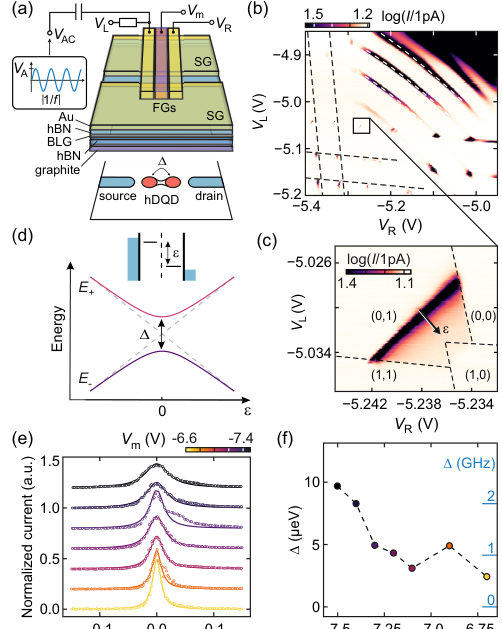
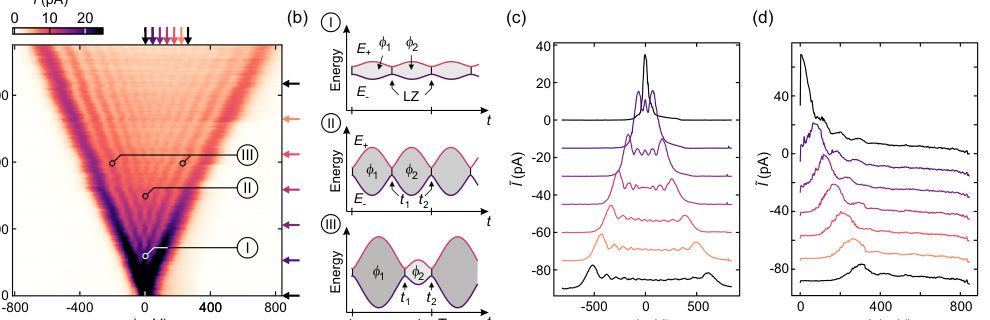
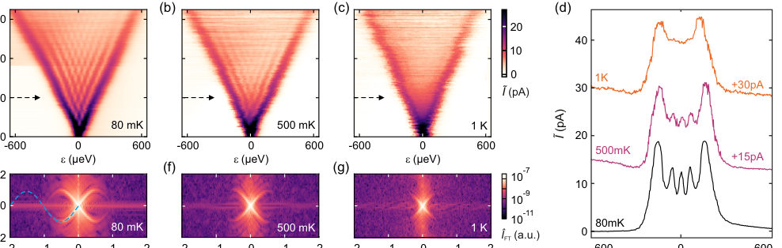
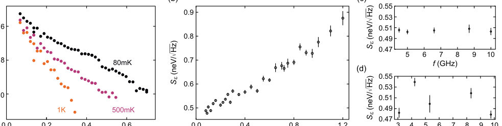
Summary. This paper investigates high-frequency charge noise in bilayer graphene quantum dots using LZSM spectroscopy. It demonstrates that the noise levels are competitive with established semiconductor platforms and identifies thermal noise or electron-phonon coupling as the primary decoherence sources. This is significant for the development of graphene-based spin and valley qubits.
Why it may be interesting. This paper is highly relevant to open quantum systems researchers as it provides an experimental characterization of a dissipative environment (noise spectral density) and identifies the specific physical mechanisms (Johnson noise vs. TLS) driving decoherence in a 2D material platform.
Main problem. The study aims to identify the microscopic origin and magnitude of high-frequency charge noise in bilayer graphene quantum dots, which is a limiting factor for qubit coherence.
Main result. The researchers found that the charge noise spectral density is comparable to silicon and III-V platforms and concluded that decoherence is driven by Johnson noise or electron-phonon coupling rather than two-level fluctuators.
Method. The study utilizes Landau-Zener-Stückelberg-Majorana (LZSM) interference spectroscopy by applying a continuous microwave voltage signal to a double quantum dot.
Model / system. A single-particle charge qubit formed in a bilayer graphene (BLG) double quantum dot encapsulated in hexagonal boron nitride (hBN) on a graphite gate, described by a two-level Hamiltonian with tunnel coupling and detuning.
Key observables. Current through the DQD, LZSM interference patterns, 2D Fourier transforms of interferograms, and noise spectral density (S_epsilon).
Important parameters / regimes. Driving frequency (5-10 GHz), temperature (80 mK to 1.2 K), interdot tunnel coupling (0.6-2.3 GHz), and noise spectral density (0.5-0.9 neV/sqrt(Hz)).
Assumptions / limitations. The analysis assumes the Markovian limit of uncorrelated noise and a diabatic regime for the LZ transitions.
Figures summary. Fig 1 shows the device architecture and charge stability diagrams; Fig 2 displays the LZSM interference patterns and state evolution; Fig 3 shows temperature-dependent interference patterns and their Fourier transforms; Fig 4 presents the decay of Fourier amplitude and the temperature/frequency dependence of noise.
Paper structure. The paper introduces the device and platform, describes the LZSM spectroscopy technique, presents the experimental interference patterns, analyzes the temperature and frequency dependence of the noise, and concludes by ruling out specific decoherence mechanisms.
Charge noise is an important factor limiting qubit coherence and relaxation in solid-state devices. In bilayer graphene (BLG) quantum dots, recently established as a promising platform for spin- and valley-based qubits, both the origin and magnitude of charge noise remain largely unexplored. Here, we investigate high-frequency charge noise using Landau-Zener-Stückelberg-Majorana (LZSM) interference spectroscopy. We study a single-particle charge qubit formed in a BLG double quantum dot at frequencies between 5 and 10 GHz and extract a noise spectral density $S_\varepsilon$ on the order of 0.5-0.9 neV$/\sqrt{\mathrm{Hz}}$. This is comparable to values reported for III-V semiconductor platforms and silicon. From the temperature and frequency dependence of the charge qubit decoherence, we conclude that thermal (Johnson) noise or electron-phonon coupling dominates over two-level fluctuators.
Authors: Rommel Tchinda Djeudjo, Gourab Kumar Sar, Timoteo Carletti
Type: theory · Category: statistical mechanics · PDF: https://arxiv.org/pdf/2605.11713v1
Analysis basis: full PDF text, analyzed in chunks
Topic relevance: driven-dissipative phase transition 3/5 · non-equilibrium dynamics 3/5 · correlated / nonlocal dissipation 2/5 · non-equilibrium universality 2/5
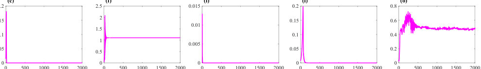
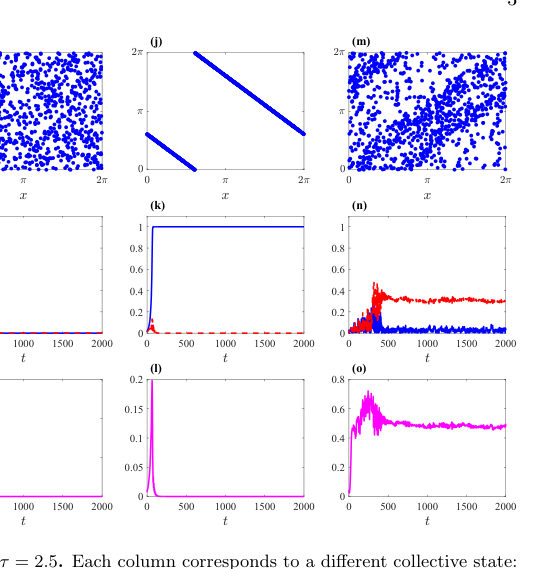
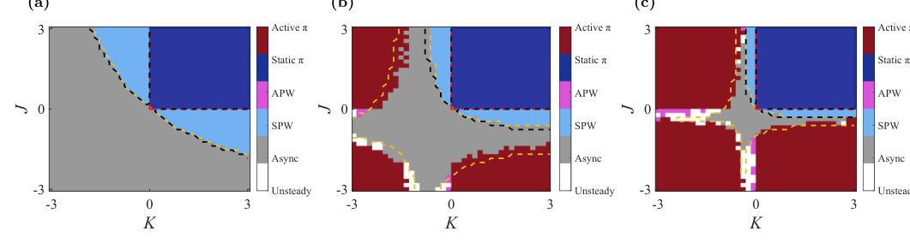
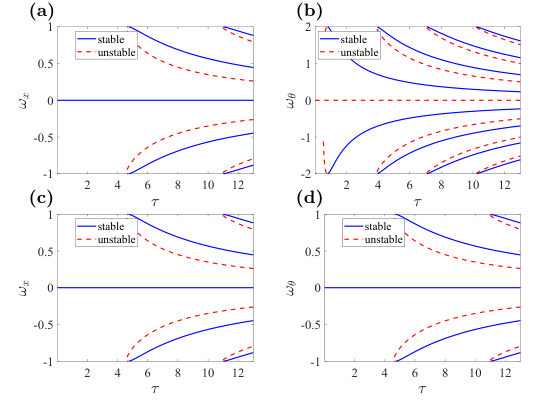
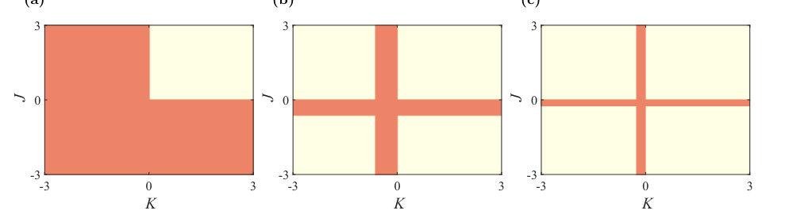
Summary. This paper explores how the specific placement of time delay in the interaction terms of 1D swarmalators affects their collective states. It reveals that asymmetric delay can promote stable moving patterns (active pi states), unlike symmetric delay which leads to disorder. This highlights that the structure of delay is just as important as its magnitude in determining emergent behavior.
Why it may be interesting. This work is relevant to many-body dynamics and non-equilibrium statistical mechanics, as it demonstrates how the internal structure of delays can act as a control parameter to stabilize or destabilize complex collective patterns.
Main problem. The study investigates how the structural form of time delay (asymmetric vs. symmetric) influences the emergent collective behavior and stability of different states in 1D swarmalator models.
Main result. The authors find that asymmetric delay fundamentally reshapes the phase diagram by expanding the stable 'active pi' state, whereas symmetric delay tends to promote unsteady, poorly ordered states.
Method. The researchers use linear stability analysis (including Fourier expansion and the Lambert W function) and direct numerical integration of delay differential equations to derive and validate stability boundaries.
Model / system. A 1D swarmalator model consisting of coupled oscillators that synchronize in both space and phase, where time delay is introduced asymmetrically into the self-interaction terms.
Key observables. Mean speed (V), spatial-phase coherence order parameters (S+ and S-), and frequency branches (omega_x and omega_theta).
Important parameters / regimes. Coupling constants J and K, time delay tau, and the structural form of the delay (asymmetric vs. symmetric).
Assumptions / limitations. The study focuses on a 1D variant of the swarmalator model with natural velocities and frequencies set to zero.
Figures summary. Figure 1 shows visual representations of five collective states (scatter plots, order parameter evolution, and velocity); Figure 2 presents bifurcation diagrams in the (J, K) plane for different delay values; Figure 3 shows numerical frequency branches as a function of delay.
Paper structure. The paper introduces the swarmalator model and the problem of delay structure, presents analytical stability derivations for various states (async, phase wave, pi states), compares asymmetric and symmetric delay models through numerical simulations, and provides appendices for detailed mathematical derivations.
Swarmalators are a class of coupled oscillators that simultaneously synchronize in both space and phase, providing a minimal model for systems ranging from biological microswimmers to robotic swarms. Time delay is ubiquitous in such systems, arising from finite signal propagation speeds and sensory processing lags, yet its structural form, whether symmetric or asymmetric, has received little attention. Here, we study a one-dimensional swarmalator model with asymmetric time delay, in which the delay enters only the self-interaction terms of the spatial and phase dynamics, breaking the symmetry assumed in prior work. We identify various collective states such as async, static phase wave, static π, and active π, and derive analytical stability boundaries for each as a function of the coupling parameters and delay. Our analysis reveals that the asymmetric delay structure fundamentally reshapes the collective phase diagram: in particular, for the asymmetric delay models, increasing the delay systematically expands the active π state at the expense of other ordered states, in contrast to the symmetric delay model, which more strongly promotes the presence of unsteady states that are generally not well ordered. By providing closed-form stability conditions validated against numerical simulations, our work establishes that the internal structure of the delay, not merely its magnitude, is a decisive factor in determining the emergent collective behavior of swarmalator populations.
Authors: Piotr Ćwikliński
Type: theory · Category: statistical mechanics · PDF: https://arxiv.org/pdf/2605.12044v1
Analysis basis: full PDF text, analyzed in chunks
Topic relevance: entanglement & information structure 3/5 · quantum measurements 3/5 · correlated / nonlocal dissipation 2/5 · non-equilibrium dynamics 2/5
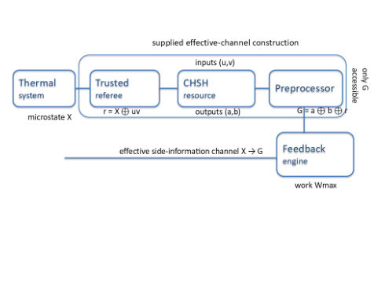
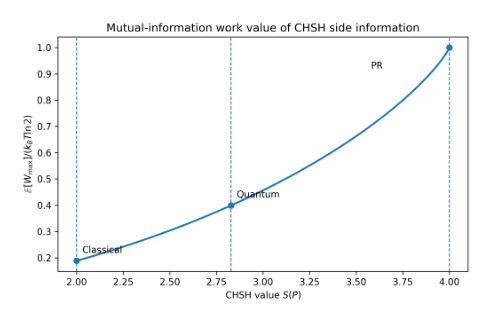
Summary. This paper quantifies how different levels of Bell-type correlations (classical, quantum, and non-signalling) affect the amount of work that can be extracted in a Szilard engine. It demonstrates that while stronger correlations allow for more efficient work extraction from side information, the total process remains consistent with the second law of thermodynamics.
Why it may be interesting. It provides a rigorous thermodynamic valuation of non-local correlations, clarifying that Bell non-locality acts as a tool for more efficient information-to-work conversion rather than a source of free energy.
Main problem. Determining the thermodynamic value of side-information channels induced by Bell-type (CHSH) correlations within a Szilard-type feedback engine.
Main result. The study establishes a strict hierarchy of extractable work based on the correlation type (classical < quantum < non-signalling) and proves that the net work over a full cycle remains non-positive, consistent with the second law.
Method. The author uses the Sagawa-Ueda feedback bound and information-theoretic tools to relate the CHSH winning probability to maximal extractable work via a binary symmetric channel.
Model / system. A thermal two-level system in contact with a heat bath at temperature T, where a controller receives side information G derived from a CHSH prediction task.
Key observables. CHSH value S(P), winning probability p_win, mutual information I(X:G), and maximal average feedback work W_max.
Important parameters / regimes. CHSH regimes (classical S<=2, quantum S<=2*sqrt(2), non-signalling S=4), temperature T, and the quasistatic limit.
Assumptions / limitations. The analysis assumes an effective-channel where the controller only sees the compressed bit G and does not include the thermodynamic cost of implementing the referee or the correlation resource.
Paper structure. The paper introduces the Szilard engine framework, defines the CHSH-induced side-information channel, derives the work-information relation, compares different correlation regimes, and performs a full-cycle analysis to ensure second-law consistency.
We study the thermodynamic value of side-information channels induced by Bell-type correlations through a CHSH prediction task embedded into a Szilard-type feedback engine. A thermal two-level system supplies a uniformly random physical microstate $X$, and a trusted referee encoding together with a nonsignalling correlation resource induces a controller bit $G$ that acts as side information about $X$. We show that the maximal average feedback work satisfies $\langle W_{\max}\rangle \le k_B T \ln 2 , I(X:G)$, with equality achievable in the ideal quasistatic limit. For the CHSH embedding considered here, the induced channel $X \to G$ is binary symmetric with success probability $p_{\rm win}=1/2+S(P)/8$, where $S(P)$ is the CHSH value. The corresponding reversible feedback work is $k_B T \ln 2 ,[1-h_2(p_{\rm win})]$, yielding a strict ordering of the optimal classical, quantum, and nonsignalling cases. The result should be interpreted as a thermodynamic valuation of CHSH-induced side information available to the controller, not as evidence that Bell nonlocality itself is a source of free energy. The analysis assumes that the controller receives only the compressed bit $G$ and does not include the thermodynamic cost of implementing the referee, the correlation resource, or the auxiliary preprocessing. A full-cycle analysis including controller-memory reset gives non-positive net work, consistent with the second law.
Authors: Alex H. Rubin, Victoria A. Norman, Marina Radulaski
Type: experiment · Category: quantum information and computing · PDF: https://arxiv.org/pdf/2605.12285v1
Analysis basis: full PDF text, analyzed in chunks
Topic relevance: QC/QI experiment 3/5 · quantum optics experiment 3/5 · spintronics-quantum-optics interface 2/5
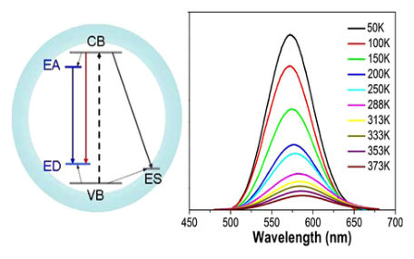
Summary. This review details the essential role of cryogenic engineering in enabling high-performance quantum photonic technologies. It traces the technological shift from liquid cryogens to automated closed-cycle systems and evaluates the specific thermal and mechanical requirements for various solid-state emitters and detectors.
Why it may be interesting. It provides essential context for the experimental realization of quantum optics and many-body physics, specifically regarding how environmental temperature control directly dictates the coherence and indistinguishability of flying qubits.
Main problem. The necessity of suppressing phonon-induced decoherence and thermal fluctuations in solid-state quantum emitters to achieve high-performance quantum technologies.
Main result. The review provides a technical overview of the transition from manual liquid cryogen handling to automated closed-cycle cryostats and details the specific temperature and hardware requirements for various quantum photonic platforms.
Method. A comprehensive technical review of cryogenic hardware (flow cryostats, mechanical cryocoolers, and dilution refrigerators) and their integration with optical quantum devices.
Model / system. The paper covers various solid-state platforms including quantum dots, color centers in diamond (NV, SiV, etc.) and silicon carbide, 2D materials (hBN, TMDs), and superconducting nanowire single-photon detectors (SNSPDs).
Key observables. Zero-Phonon Line (ZPL) width, phonon sideband (PSB) intensity, photon indistinguishability, spin coherence times (T1, T2), and photon brightness.
Important parameters / regimes. Temperature regimes (mK to 373 K), magnetic field scales (mT to T), cooling power (Watts), and vibration levels.
Assumptions / limitations. The review focuses on the practical engineering constraints and the physical necessity of low temperatures for suppressing lattice vibrations.
Figures summary. Figure 1 shows temperature-dependent photoluminescence broadening in quantum dots; Figure 2 illustrates ZPL washing out in NV centers; Figure 6 shows a helium mixture phase diagram; Figure 7 shows a DR setup for quantum optics; Figure 8 shows a scanning confocal microscope setup.
Paper structure. The paper introduces the problem of thermal decoherence, reviews the evolution of cryogenic hardware from wet to dry systems, details specific temperature requirements for different quantum emitters, discusses technical challenges in optical/electrical interfacing, and concludes with the future scaling and infrastructure needs of quantum technology.
While nonclassical light sources are fundamental to quantum communication and computing, solid-state platforms like color centers and quantum dots require cryogenic temperatures to reach the performance levels necessary for practical applications. Over the past decade, low-temperature engineering has transitioned from manual handling of liquid cryogens to automated closed-cycle cryostats. This review details the principles behind modern cooling hardware ranging from flow cryostats to mechanical cryocoolers and dilution refrigerators, with a specific focus on the requirements of optical quantum devices. Aimed at the practicing scientist, this overview provides the technical insights and historical context needed to navigate the current cryogenic landscape and evaluate its role in the future of quantum technology deployment.
Authors: Koki Ono, Shun Umekawa, Hiroyasu Tajima
Type: theory · Category: statistical mechanics · PDF: https://arxiv.org/pdf/2605.12331v1
Analysis basis: full PDF text, analyzed in chunks
Topic relevance: entanglement & information structure 3/5 · quantum measurements 3/5 · non-equilibrium dynamics 2/5
Summary. This paper develops a unified framework for information thermodynamics within Generalized Probabilistic Theories (GPTs). It proves that while a generalized second law holds if certain entropy properties are met, specific non-quantum GPTs can realize cycles that extract work from measurements, highlighting the critical role of entropy definitions in thermodynamic consistency.
Why it may be interesting. This work is highly relevant for researchers in open quantum systems and quantum thermodynamics as it provides a rigorous, model-independent foundation for understanding the fundamental relationship between information, measurement, and the second law of thermodynamics beyond the standard quantum mechanical framework.
Main problem. The paper addresses the lack of a developed framework for information thermodynamics within Generalized Probabilistic Theories (GPTs) and investigates whether certain GPTs allow for violations of the second law of thermodynamics through measurement-driven processes.
Main result. The authors derive a generalized second law of information thermodynamics for arbitrary GPTs and demonstrate that violations of the second law (positive work extraction from isothermal cycles) can occur in specific GPT models, such as square and regular-hexagon state spaces, due to discrepancies in entropy definitions.
Method. The study uses the GPT formalism to construct a unified framework for analyzing measurement, feedback, and erasure, extending the Sagawa-Ueda inequalities and analyzing semipermeable membrane (SPM) models using entropy analysis.
Model / system. The framework encompasses Generalized Probabilistic Theories (GPTs), including classical and quantum mechanics, as well as hypothetical systems like square and regular-hexagon state spaces. It specifically utilizes semipermeable membrane (SPM) models involving ideal gases with internal GPT degrees of freedom.
Key observables. Extracted work (W_ext), entropy changes (measurement, mixing, and accessible information entropy), and information gain (Groenewold-Ozawa information).
Important parameters / regimes. Inverse temperature (beta), measurement efficiency, and entropy properties such as subadditivity and concavity.
Assumptions / limitations. The analysis assumes finite-dimensional GPT systems and relies on the existence of concave entropies that are invariant under reversible processes.
Figures summary. Figure 1 illustrates generalized information processes; Figures 2-4 depict SPM models for separation, mixing, and general isothermal cycles; Figures 5-6 show explicit SPM cycles in square and hexagon systems that result in positive work extraction.
Paper structure. The paper begins by establishing a unified framework for information thermodynamics in GPTs, moves to the derivation of generalized Sagawa-Ueda inequalities, analyzes the thermodynamic cost of SPM-based measurements, and concludes by constructing explicit counter-examples (square/hexagon models) where the second law is violated.
Generalized Probabilistic Theories (GPTs) provide a unified framework for describing probabilistic physical theories, encompassing classical and quantum theories as well as hypothetical theories beyond quantum mechanics. Since most GPTs are highly unrealistic and far removed from known physical theories, it is important to constrain them by physically reasonable principles. One of the most important such principles is consistency with thermodynamics, which has been extensively studied through toy models involving semipermeable membranes (SPMs) implementing measurements. On the other hand, information thermodynamics, which plays a central role in understanding the relationship between measurement and thermodynamics in classical and quantum theory, has remained largely undeveloped in GPTs. In this work, we construct information thermodynamics in GPTs and provide a unified framework for analyzing the relationship between measurement, feedback, information erasure, and the second law of thermodynamics. We also formulate a general framework for SPM models and analyze the thermodynamic cost of measurements implemented by SPMs. As a result, we show that no work can be extracted in contradiction with the second law as long as the measurement processes are consistent with entropy nondecrease, and derive sufficient conditions for this property for several entropy definitions proposed in GPTs. Moreover, by considering measurement processes violating these conditions, we construct explicit GPT systems realizing isothermal SPM cycles from which positive work can be extracted. These results demonstrate that violations of the second law can arise from the lack of fundamental entropy properties or discrepancies between entropy definitions, and provide a unified and model-independent foundation for understanding the relationship between thermodynamics and measurement in GPTs.
Authors: Amanda Young, Bruno Nachtergaele, Andrew Jackson
Type: theory · Category: strongly correlated electrons · PDF: https://arxiv.org/pdf/2605.12184v1
Analysis basis: full PDF text, analyzed in chunks
Topic relevance: entanglement & information structure 3/5 · analog quantum simulation 2/5 · exotic spin models in light-matter 2/5
Summary. This paper provides a rigorous proof that AKLT models on hexagonal and Lieb lattices possess local topological quantum order and a stable spectral gap. By using cluster expansion techniques, the authors demonstrate that the ground state is unique in the infinite volume limit and that correlations decay exponentially. This establishes the robustness of these specific quantum spin models against local perturbations.
Why it may be interesting. This work provides rigorous mathematical foundations for the stability of topological phases and spectral gaps in many-body systems, which is fundamental for understanding the robustness of quantum states in condensed matter and many-body dynamics.
Main problem. The paper aims to prove the existence of Local Topological Quantum Order (LTQO) and the stability of the spectral gap for AKLT models on hexagonal and Lieb lattices under small perturbations.
Main result. The authors prove that the ground states of these models satisfy the LTQO condition and that the spectral gap is stable against sufficiently small, decaying perturbations, while also establishing the exponential decay of correlations.
Method. The study utilizes a polymer representation of the ground state, cluster expansion techniques, and the Kotecky-Preiss convergence criterion to analyze the thermodynamic limit and ground state indistinguishability.
Model / system. The models are AKLT (Affleck-Kennedy-Lieb-Tasaki) models on hexagonal and Lieb lattices, featuring frustration-free, SU(2) invariant Hamiltonians consisting of projections onto maximum total spin for nearest neighbors.
Key observables. Local observables, two-point correlation functions, and the spectral gap.
Important parameters / regimes. Lattice decoration number (m), spin values (s), and the distance between the observable support and the boundary.
Assumptions / limitations. The stability proof assumes perturbations are sufficiently small and possess sufficient decay; the results for the square lattice require m >= 1.
Figures summary. Figure 1 shows the construction of subgraphs and lattice decorations; Figure 2 illustrates ground state space structure and bulk-boundary maps; Figure 3 depicts various types of polymers (loops and self-avoiding walks) used in the expansion.
Paper structure. The paper introduces the lattice geometries and Hamiltonian, defines the algebraic structure of the ground states using Weyl representation, develops a bulk-boundary map, applies cluster expansion to prove LTQO and gap stability, and concludes with an appendix of numerical path-counting data.
We prove that the ground state of the AKLT models on the hexagonal lattice and the Lieb lattice satisfy the local topological quantum order (LTQO) condition. This will be a consequence of proving that the finite volume ground states are indistinguishable from a unique infinite volume ground state. Concretely, we identify a sequence of increasing and absorbing finite volumes for which any finite volume ground state expectation is well approximated by the infinite volume state with error decaying at a uniform exponential rate in the distance between the support of the observable and boundary of the finite volume. As a corollary to the LTQO property, we obtain that the spectral gap above the ground state in these models is stable under general small perturbations of sufficient decay. We prove these results by a detailed analysis of the polymer representation of the ground states state derived by Kennedy, Lieb and Tasaki (1988) with the necessary modifications required for proving the strong form of ground state indistinguishability needed for LTQO.
Authors: Chon-Fai Kam, Xavier Cadet, Miloud Bessafi, Frederic Cadet
Type: both · Category: quantum information and computing · PDF: https://arxiv.org/pdf/2605.11557v1
Analysis basis: full PDF text, analyzed in chunks
Topic relevance: entanglement & information structure 3/5 · measurement-induced transitions 2/5 · quantum measurements 1/5
Summary. This paper identifies a critical wavelet scaling exponent (alpha = 1/2) that marks the boundary between classical simulability and quantum complexity for encoded data. It reveals that while certain data structures provide protection against classical emulation, they simultaneously impose an exponential measurement overhead known as the shot-noise wall. The work bridges the gap between multi-scale signal analysis and the scalability of quantum machine learning.
Why it may be interesting. not directly relevant
Main problem. The paper seeks to identify a physics-grounded metric to assess the structural fidelity of latent spaces in world models and to determine the threshold for classical tensor-network simulability of amplitude-encoded quantum kernels.
Main result. The authors establish that a wavelet scaling exponent of alpha = 1/2 serves as a sharp phase transition boundary between an area-law phase (efficiently simulable) and a volume-law phase (exponentially hard), while also identifying a 'shot-noise wall' where measurement overhead scales as Omega(d^2).
Method. The study employs wavelet analysis (Daubechies-4) to estimate scaling exponents, tensor network theory to analyze bond dimension growth, and Weingarten calculus to analytically derive transition probability variance.
Model / system. The system consists of high-dimensional latent vectors from pre-trained VideoMAE models, amplitude-encoded into quantum states and processed via quantum kernel methods using deep, scrambling quantum circuits approximating unitary 2-designs.
Key observables. Wavelet scaling exponent (alpha), von Neumann entanglement entropy, MPS bond dimension (chi), and variance of the scrambled transition probability.
Important parameters / regimes. Wavelet scaling exponent alpha = 1/2 (critical threshold), area-law vs. volume-law regimes, and the shot-noise wall scaling M = Omega(d^2).
Assumptions / limitations. Assumes Gaussianity and independence of wavelet coefficients at different scales, and approximates quantum circuits as unitary 2-designs.
Figures summary. Figure 3 illustrates the exponential growth of MPS bond dimension across the alpha threshold; Table 2 shows the tight match between empirical and theoretical variance scaling; Table 3 details the transition of entanglement entropy and bond dimension.
Paper structure. The paper introduces the problem of latent space fidelity, proposes the wavelet exponent as a diagnostic, proves the connection between alpha and tensor network simulability, analyzes real-world VideoMAE data, and concludes with the derivation of the shot-noise wall using Weingarten calculus.
While world models learn compact representations of complex environments, they lack a physics-grounded metric to assess the structural fidelity of their latent spaces. We identify the wavelet scaling exponent $α$ as a critical diagnostic, proposing optimal representations satisfy variance equipartition ($α\approx 1/2$) -- mirroring Kolmogorov's inertial range. We establish $α= 1/2$ as a sharp transition boundary for the classical simulability of amplitude-encoded quantum kernels. Using tensor-network theory, we prove latents with $α> 1/2$ reside in an area-law phase admitting efficient classical emulation, while $α< 1/2$ triggers a volume-law phase where the Matrix Product State bond dimension $χ$ grows exponentially with qubit count $n$. Analyzing pre-trained VideoMAE latents reveals a dichotomy: spatial tokens approach the equipartition limit ($α\approx 0.423$), but permutation-invariant feature channels exhibit unstructured disorder ($α\approx -0.123$). This forces real-world latents deep into the volume-law phase, providing a data-driven necessary condition for simulation hardness. Finally, we apply Weingarten calculus to derive the exact variance of the scrambled transition probability under a 2-design ensemble. We prove this variance scales strictly as $\Var[X] = Θ(d^{-2})$. We confirm this numerically with a log-log slope of $-1.881$ ($R^2 = 0.999$), identifying a formidable shot-noise wall demanding a measurement budget of $M = Ω(d^2)$ that constrains quantum machine learning scalability.
Authors: Elhabib Jaloum, Omar Bachain, Mohamed Amazioug, Nazek Alessa, Rachid Ahl Laamara, R. T. Matoog, Abdel-Haleem Abdel-Aty
Type: theory · Category: quantum information and computing · PDF: https://arxiv.org/pdf/2605.11323v1
Analysis basis: full PDF text, analyzed in chunks
Topic relevance: entanglement & information structure 3/5 · methods for driven-dissipative 2/5
Summary. This paper investigates how quantum correlations and teleportation fidelity in top-antitop quark production are affected by different types of environmental noise. It shows that certain quantum resources, such as geometric quantum discord, are more robust to decoherence than entanglement or Bell nonlocality. The study highlights the potential for maintaining quantum advantages even in noisy, high-energy particle physics processes.
Why it may be interesting. This paper is interesting for researchers in open quantum systems as it applies standard decoherence models (AD, PD, PF) to a high-energy particle physics context, demonstrating how quantum resources like discord and teleportation fidelity can persist despite environmental noise.
Main problem. The study aims to characterize the dynamics and robustness of various quantum correlations (Bell nonlocality, steering, entanglement, and discord) and quantum teleportation fidelity in top-antitop (t-tbar) quark production under the influence of environmental noise.
Main result. The researchers found that while AD and PD channels cause monotonic decay of correlations, the PF channel allows for a partial revival of correlations, and quantum teleportation fidelity remains above the classical threshold of 2/3 even in the presence of noise.
Method. The authors use quantum information-theoretic measures (Bell-CHSH, CJWR inequality, Concurrence, and GQD) applied to a spin density matrix derived from QCD production channels, modeling decoherence via Kraus operator formalism for AD, PD, and PF channels.
Model / system. The system consists of top-antitop (t-tbar) quark pairs produced via gluon-gluon fusion (gg to t-tbar) and quark-antiquark annihilation (q-qbar to t-tbar), modeled as a bipartite spin-1/2 system described by an X-state density matrix.
Key observables. Bell nonlocality, quantum steering, concurrence, geometric quantum discord (GQD), and quantum teleportation fidelity.
Important parameters / regimes. Top-quark velocity (beta), production angle (theta), decoherence parameter (p), and the ultra-relativistic limit (beta = 1).
Assumptions / limitations. The system is modeled as a bipartite spin-1/2 system; the analysis focuses on leading-order QCD production and specific effective decoherence channels.
Figures summary. Figures illustrate the dependence of quantum correlations on production angles and velocity, the decay of correlations under different noise channels, and the behavior of teleportation fidelity as a function of the decoherence parameter and phase angles.
Paper structure. The paper introduces the top-quark spin system, defines the QCD production channels and noise models, quantifies various quantum correlations, analyzes the impact of decoherence on these correlations, and evaluates the efficiency of quantum teleportation.
The measurement of top-quark spin correlations provides a key tool for probing its interactions with high precision. Owing to its extremely short lifetime ($τ\sim 10^{-25}$ s), the top quark preserves its spin polarization information, making the $t\bar{t}$ system an ideal framework for investigating quantum correlations in high-energy physics. In this work, we analyze quantum correlations in $t\bar{t}$ pairs produced in QCD using several quantum information-theoretic measures, including Bell nonlocality, quantum steering, concurrence, and geometric quantum discord. Their dependence on kinematic variables is examined in both the $gg \to t\bar{t}$ and $q\bar{q} \to t\bar{t}$ channels, with convergence toward the $gg \to t\bar{t}$ dominated regime in the ultra-relativistic limit ($β= 1$). We also investigate the effect of three effective decoherence channels (AD, PD, and PF). The AD and PD channels lead to a monotonic degradation of correlations as the decoherence parameter $p$ increases, while the PF channel exhibits a symmetric behavior around $p=1/2$. The impact of these channels on quantum teleportation is analyzed, showing that it remains above the classical threshold of $2/3$ even in the presence of noise. These results indicate that certain quantum resources can persist despite decoherence, opening new perspectives at the interface of quantum information and particle physics.
Authors: Linmu Qiao, Zhichun Ouyang, Sisi Zhou
Type: theory · Category: quantum information and computing · PDF: https://arxiv.org/pdf/2605.11092v1
Analysis basis: full PDF text, analyzed in chunks
Topic relevance: quantum measurements 3/5 · entanglement & information structure 2/5
Summary. This paper introduces a protocol for distributed quantum sensing using a punctured surface code to estimate many-body Hamiltonians. By using topological 'witnesses' to ensure multiple local interactions act as a single protected logical operator, the scheme achieves noise-robustness and Heisenberg-limited precision. The work provides the necessary geometric and algebraic conditions to realize such a sensor in a practical surface code architecture.
Why it may be interesting. It provides a novel way to use topological error-correcting codes not just for storage, but as active, robust sensors for distributed many-body interactions, which is highly relevant to the development of scalable quantum sensor networks.
Main problem. How to perform distributed quantum metrology to estimate a weighted average of many-body Hamiltonian coupling strengths while maintaining noise robustness using quantum error correction.
Main result. The authors establish a topological criterion (the global odd-witness condition) for when various local Z-type interactions can act as a single protected logical operator in a punctured surface code, providing a noise-robust sensing protocol.
Method. The study uses algebraic topology (chains, cochains, and relative homology) to define a 'witness' loop that ensures all signal paths implement the same logical Z operator, alongside a two-stage construction for creating rough holes in the code.
Model / system. A punctured planar surface code with two 'rough holes' (created by deactivating X-type star checks) where Z-type signal chains connect the holes to encode a logical qubit.
Key observables. The logical X measurement outcome in a Ramsey-style experiment, which follows a distribution used to estimate the target quantity q.
Important parameters / regimes. The target functional q (weighted sum of couplings), the effective logical time t, and the number of sensors M; the protocol achieves the sensor-network Heisenberg limit.
Assumptions / limitations. The signal chains are assumed to be disjoint (in the primary regime) or have limited overlap; the rough holes are assumed to be 'clean' and disk-like.
Figures summary. Figure 1 shows the surface code lattice and a concrete punctured example with signal paths and witness loops; Figure 2 illustrates parallel vs. sequential loading strategies; Figure 3 details the stepwise construction of rough holes; Figure 4 shows local obstructions to the clean-hole construction.
Paper structure. The paper begins with a motivating example of planar sensing, moves to a general topological criterion for signal equivalence, provides a constructive method for implementing the punctured code, and concludes with an analysis of precision scaling and limitations regarding overlapping supports.
We study how a punctured surface code can turn many local $Z$-type couplings into one protected logical signal for distributed quantum metrology, where the goal is to estimate a weighted average of the coupling strengths. We consider an ordinary planar patch with two $X$-cut holes and provide a distributed sensing protocol where all $Z$-type couplings correspond to the same nontrivial logical $\bar{Z}$ for the punctured surface code. When the couplings are disjoint, we show that the relevant global condition is equivalent to the existence of a closed dual loop, called a witness, that has an odd number of intersections with every chain. Together with a local clean opening condition, this witness criterion gives a concrete punctured-code construction in which all signal chains implement the same nontrivial logical $\bar Z$. For three-body interactions with overlapping supports, we also identify the class of interactions where our punctured surface code protocol applies. Overall, our results provide a novel, noise-robust distributed sensing protocol for many-body interactions, with corresponding topological design criteria.
Authors: Jeonghyeon Shin, Jaehak Lee, Soojoon Lee, Seung-Woo Lee
Type: theory · Category: quantum information and computing · PDF: https://arxiv.org/pdf/2605.12130v1
Analysis basis: full PDF text, analyzed in chunks
Topic relevance: quantum measurements 3/5 · entanglement & information structure 2/5
Summary. This paper addresses the degradation of quantum teleportation caused by imperfect Bell-state measurements. It proposes a measurement-reversal strategy that can restore unit-fidelity teleportation by trading off success probability. The work establishes a quantitative link between measurement entanglement and protocol performance.
Why it may be interesting. It provides a practical framework for maintaining high-fidelity quantum communication in the presence of realistic, systematic hardware errors like residual ZZ or XX interactions.
Main problem. Investigating how coherent errors in Bell-state measurements (BSM) degrade quantum teleportation fidelity and finding ways to recover unit fidelity.
Main result. The authors show that while BSM errors reduce fidelity in standard protocols, a measurement-reversal (MR) framework can restore unit fidelity at the cost of reduced success probability and increased information leakage.
Method. Analytical derivation using Kraus operators, singular value decomposition (SVD) for optimization, and a measurement-reversal framework to implement probabilistic reversing operations.
Model / system. A quantum teleportation protocol involving a shared quantum channel and a joint measurement subject to coherent rotation errors (XX-type and ZZ-type) arising from imperfect entangling gates.
Key observables. Teleportation fidelity (F_tele), success probability (P_succ), measurement entanglement (E_M), channel entanglement (E_c), and information leakage (L_Alice).
Important parameters / regimes. Error strength (t), channel entanglement parameter (phi), and the classical fidelity limit of 2/3.
Assumptions / limitations. The analysis assumes the coherent error is known and focuses on the recovery of pure-state teleportation.
Figures summary. Figure 1 shows the BSM circuit error; Figures 2 and 9 illustrate the monotonic decrease of fidelity and entanglement with error strength; Figure 8 compares standard vs. optimized protocol performance.
Paper structure. The paper introduces the problem of BSM errors, develops an analytical framework for quantifying fidelity loss, proposes a measurement-reversal strategy for fidelity recovery, and provides detailed derivations for both qubit and higher-dimensional systems.
Quantum teleportation is a fundamental protocol in quantum information science, whose performance is conventionally evaluated under the assumption of ideal Bell-state measurements. In realistic implementations, however, joint measurements are often imperfect and can deviate from maximally entangled bases due to coherent errors in entangling operations. In this work, we analytically show how the entanglement of joint measurements determines teleportation performance and propose a strategy to overcome the limitations imposed by partially entangled joint measurements to recover the unit teleportation fidelity. We then derive an exact equation revealing a quantitative relation between measurement entanglement, channel entanglement, and the success probability to realize the unit-fidelity teleportation. We illustrate our results using elegant joint measurements and realistic coherent error models arising from imperfect entangling operations in quantum systems. Our work provides fundamental insight into the role of measurement entanglement in quantum teleportation and establishes a practical framework for achieving faithful teleportation without requiring substantial modifications to existing hardware.
Authors: Ashe Miller, Corey Ostrove, Jordan Hines, Noah Siekierski, Kevin Young, Robin Blume-Kohout, Timothy Proctor
Type: theory · Category: quantum information and computing · PDF: https://arxiv.org/pdf/2605.11158v1
Analysis basis: full PDF text, analyzed in chunks
Topic relevance: methods for driven-dissipative 3/5 · quantum measurements 2/5
Summary. This paper introduces a scalable version of Gate Set Tomography that uses a linear approximation and sparse error models to characterize many-qubit systems. It overcomes the exponential scaling bottleneck of traditional GST, allowing for the simultaneous estimation of coherent and stochastic errors. The technique is shown to be robust and efficient for systems up to 10 qubits.
Why it may be interesting. This is highly relevant for researchers in open quantum systems and quantum optics as it provides a scalable framework for characterizing complex, non-unitary dynamics and crosstalk in many-body quantum processors.
Main problem. Standard Gate Set Tomography (GST) suffers from exponential scaling in both parameters and computational cost, making it impossible to characterize many-qubit systems. Existing scalable methods often rely on overly simplified error models that cannot distinguish between coherent and stochastic errors.
Main result. The authors present 'linearized GST', a scalable technique that achieves polynomial scaling by using sparse error models and a linear approximation. The method is demonstrated to accurately estimate both coherent and stochastic error rates in up to 10-qubit systems, including crosstalk.
Method. The method uses a first-order Taylor expansion of the error channel to relate error parameters to changes in Pauli expectation values, transforming the problem into a linear inversion task. It leverages Clifford propagation and sparse error models to maintain computational efficiency.
Model / system. The study uses simulated n-qubit quantum processors (up to 10 qubits) with ring connectivity. Errors are modeled via a Lindbladian containing a sparse set of Hamiltonian (coherent) and Pauli-stochastic error generators.
Key observables. Expectation values of Z-type Pauli observables.
Important parameters / regimes. Error rates (Hamiltonian h_P and stochastic s_P), circuit depth, number of circuits (K), shot noise (N), and the error magnitude scale factor (c).
Assumptions / limitations. Errors are assumed to be Markovian and sparse (polynomial number of non-zero rates). The method relies on a first-order linear approximation, which is valid only for shallow circuits and small error rates.
Figures summary. Figure 1 shows the protocol workflow; Figure 2 demonstrates accurate error estimation in 10-qubit simulations; Figure 3 shows estimation error scaling with dataset size and shot noise; Figure 4 shows the impact of unmodeled errors; Figure 5 shows the breakdown of the linear approximation at high error magnitudes; Figure 6 shows the design matrix is typically full rank.
Paper structure. The paper defines the error generator formalism, explains Clifford propagation and the sparse error model, introduces the linearized GST protocol, presents simulation results for accuracy and robustness, and discusses the limits of the linear approximation and gauge freedom.
Characterizing errors on many-qubit quantum computers remains a key challenge to understanding and improving the performance of these devices. Current characterization methods either don't scale beyond a few qubits, or make simplifying assumptions (such as assuming stochastic Pauli error) that obscure the underlying physical error mechanisms. In this work, we present a scalable extension to gate set tomography-linearized gate set tomography-that enables characterization of many-qubit systems. Linearized gate set tomography relies on sparse error models, a linear approximation to enable efficient data fitting, and data from shallow circuits-so that the systematic error in the linear approximation is small. We demonstrate the accuracy of our technique using simulations of a ten-qubit system with coherent and stochastic errors, including coherent crosstalk, and we demonstrate that it is robust in presence of additional errors that are not included within the sparse error model ansatz.
← Index · ← Previous · Next →